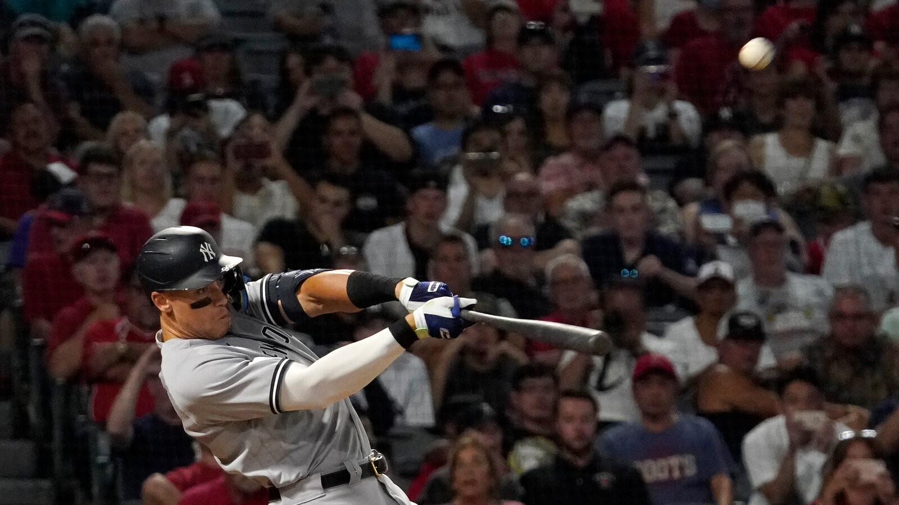
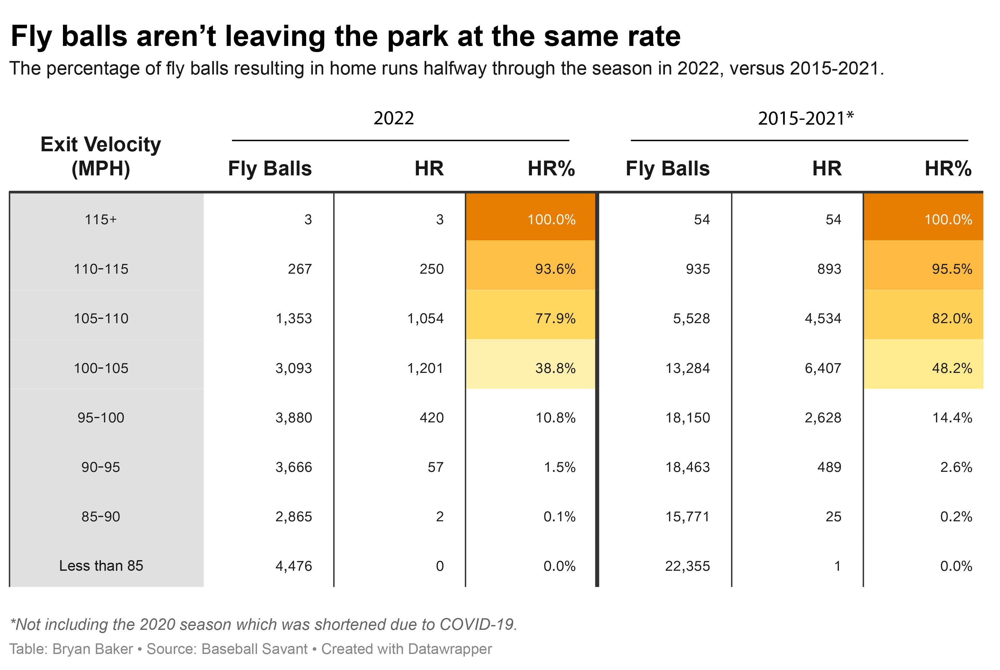
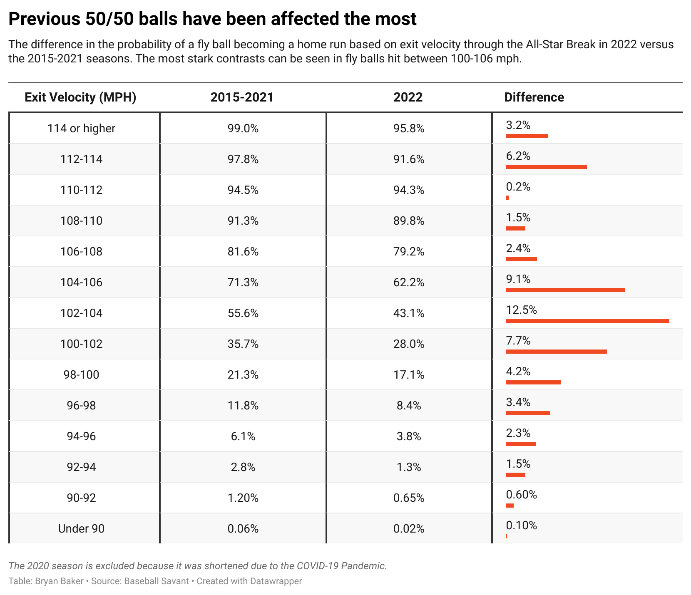

Sports
Halfway through the 2022 season, it is apparent that balls are not carrying as much as previous seasons.
July 20, 2022
After Major League Baseball saw a record 6,776 home runs hit in 2019, a whopping 671 more than the previous record set in 2017, the league commissioned a 10-person team of scientists to determine why the baseballs seemed to carry more than previous seasons.
The committee of scientists determined that small inconsistencies in seam height on the baseballs contributed to the home run surge, prompting MLB to make changes to the balls for the 2021 season. But astrophysicist Meredith Wills found that MLB actually used two different balls that year. The league announced that different balls were used because of production delays caused by COVID-19.
MLB announced that only balls manufactured after the 2021 production change would be used in the 2022 season. Halfway through the season it seems that the new baseball has decreased the home run rate by a fair amount.
The new balls have a higher drag coefficient, which affects how much the balls carry. Drag is the air resistance acting in the opposite direction of a batted ball. It determines how quickly a ball will slow down after being struck. The surface area of a ball ultimately determines how much drag it will experience. A ball with less drag will travel farther than a ball with more drag.
Basically, as drag goes up, home runs go down.
A fly ball’s probability of becoming a home run based on exit velocity has decreased across each 5 degree increment, excluding balls hit over 115 mph (“No Doubters”). The biggest difference can be seen in fly balls hit between 100-105 mph, where the probability has decreased by around 10%.
Looking at even more specific ranges of exit velocity, we see that fly balls that previously had about a 50% chance of becoming home runs have been the most negatively affected. These balls could be considered borderline home runs or “doubters.”
In previous years through the All-Star Break, fly balls hit between 100-106 mph had a home run probability of 54.2%. Through this year, they only had a 44.4% chance, a 9.8% difference.
Drag isn't the only factor that affects how far a ball will carry. There are a variety of "park factors" that come into play as well.
The most obvious park factor is the field dimensions. Some ballparks have deeper walls than others. Some have higher walls. Yankees Stadium and Fenway Park are probably the most popular examples.
Other factors such as weather, air density, air quality, and even the topology of the surrounding area can influence a ball's carry. Coor's field, where the Colorado Rockies play, has thinner air density because of the high altitude, which means balls face less air resistance. For this reason, it is commonly referred to as one of the most hitter-friendly parks in all of baseball.
MLB's alteration of the balls is just another factor that hitters have to deal with this year.
The new ball hasn’t drastically affected the no doubters, but borderline home runs have taken the biggest hit. It is evidently clear that the ball isn’t carrying as much on the same quality of contact.
Check out this thread of some bad luck fly balls that didn't make it out for the Yankees this year:
- April 10, 2022 -
— YankeeSavant (@YankeeSavant) May 25, 2022
Joey Gallo’s lineout (112.5 mph, 22°, .991 xBA)
Since 2015, there have been 138 batted balls hit between 112-113 mph with a launch angle between 21-23°.
Gallo’s is the only one to result in an out. 1 of 138 (.7%). pic.twitter.com/sFTG0vydbB